11 Customizing ggplot2 Visualizations
You know how to build charts. Now let’s make them look good. The default ggplot2 appearance – that gray background with white gridlines – is fine for quick exploration, but it is not what you want in a slide deck, a client report, or a dashboard. This chapter is about going from “I made a chart” to “I made a chart that looks professional.”
We will cover:
- Themes – swap out the entire visual style in one line
- Colors – use palettes that look polished and are accessible
- Axis formatting – dollar signs, commas, percentages on your axes
- Legends – move them, restyle them, or get rid of them
- Annotations – draw attention to the things that matter
- Combining plots – put multiple charts together for a complete story
We will use the built-in mpg, iris, and diamonds datasets throughout. This chapter also uses three additional packages — patchwork (combining plots), ggthemes (publication-style themes), and ggrepel (non-overlapping labels). Install them once if you haven’t already:
install.packages(c("patchwork", "ggthemes", "ggrepel"))11.1 Themes – One-Line Style Upgrades
11.1.1 Built-in Themes
Every ggplot2 plot uses a theme to control non-data elements like backgrounds, gridlines, and fonts. The default is theme_gray(). Here are the ones worth knowing:
base_plot <- ggplot(mpg, aes(x = displ, y = hwy)) +
geom_point(aes(color = class)) +
labs(title = "Engine Displacement vs. Highway MPG")
library(patchwork)
p1 <- base_plot + theme_gray() + ggtitle("theme_gray() (default)")
p2 <- base_plot + theme_bw() + ggtitle("theme_bw()")
p3 <- base_plot + theme_minimal() + ggtitle("theme_minimal()")
p4 <- base_plot + theme_classic() + ggtitle("theme_classic()")
p5 <- base_plot + theme_light() + ggtitle("theme_light()")
(p1 | p2 | p3) / (p4 | p5)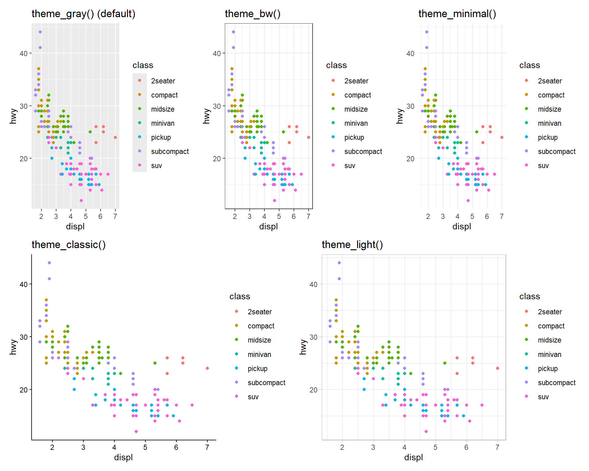
Here is the quick rundown:
-
theme_bw()– Removes the gray background. Clean, great for printed reports. -
theme_minimal()– Even cleaner. This is probably the most popular choice for business presentations. -
theme_classic()– Looks like a textbook chart. Axis lines, no gridlines. -
theme_light()– Light gray gridlines. A nice middle ground.
For most business work, theme_minimal() or theme_bw() will serve you well.
11.1.2 Themes from ggthemes
The ggthemes package provides themes inspired by well-known publications. If you want your chart to look like it belongs in The Economist or the Wall Street Journal:
library(ggthemes)
t1 <- base_plot + theme_economist() + ggtitle("theme_economist()")
t2 <- base_plot + theme_fivethirtyeight() + ggtitle("theme_fivethirtyeight()")
t3 <- base_plot + theme_tufte() + ggtitle("theme_tufte()")
t4 <- base_plot + theme_wsj() + ggtitle("theme_wsj()")
(t1 | t2) / (t3 | t4)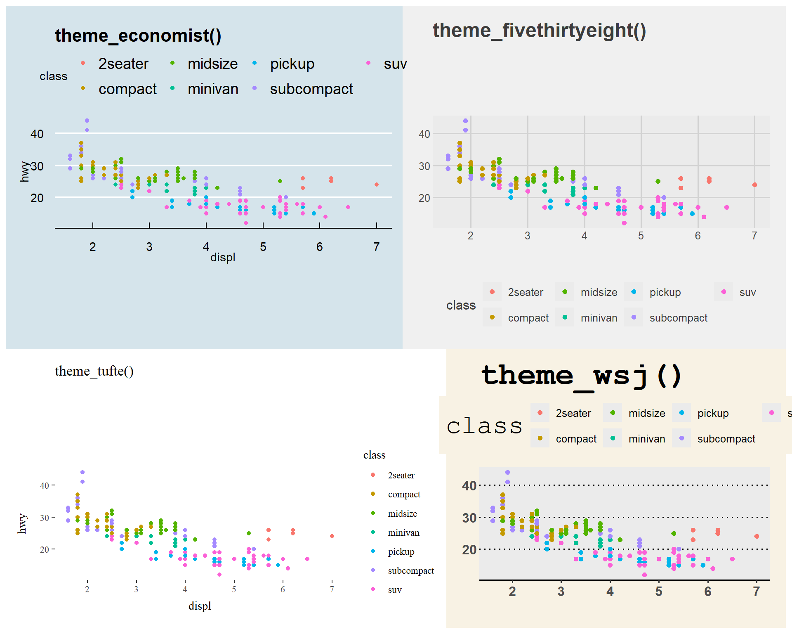
Fun to play with, and occasionally the right choice for a specific audience.
11.1.3 Setting a Global Theme
Tired of adding + theme_minimal() to every plot? Set it once at the top of your script:
theme_set(theme_minimal())
# Now every plot uses theme_minimal() automatically
ggplot(mpg, aes(x = class)) +
geom_bar(fill = "steelblue") +
labs(title = "Vehicle Class Counts", x = "Class", y = "Count")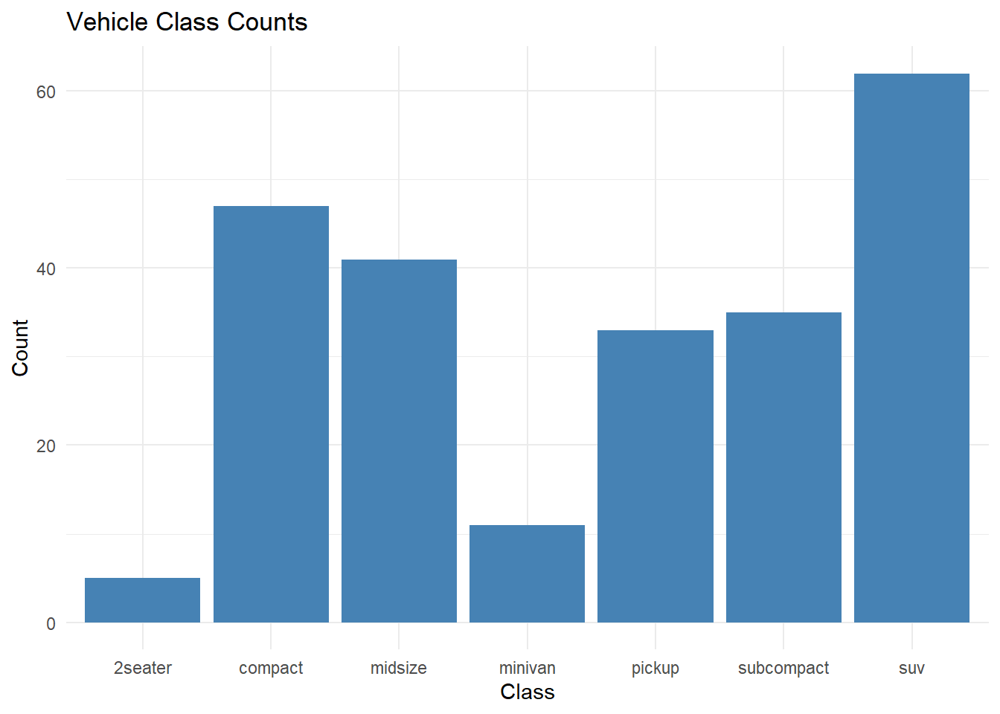
11.2 Fine-Tuning with theme()
Sometimes you want a built-in theme but with a few tweaks. The theme() function lets you modify individual elements using four helpers:
| Helper Function | Controls | Key Arguments |
|---|---|---|
element_text() |
Text |
family, face, size, color, angle
|
element_line() |
Lines |
color, linewidth, linetype
|
element_rect() |
Rectangles/borders |
fill, color
|
element_blank() |
Removes the element | (none) |
11.2.1 Example: Making Titles Stand Out
ggplot(mpg, aes(x = displ, y = hwy, color = class)) +
geom_point(size = 2) +
labs(
title = "Fuel Efficiency by Engine Size",
subtitle = "Larger engines tend to have lower highway mileage",
caption = "Source: EPA fuel economy data (mpg dataset)",
x = "Engine Displacement (liters)",
y = "Highway MPG",
color = "Vehicle Class"
) +
theme(
plot.title = element_text(face = "bold", size = 16, color = "navy"),
plot.subtitle = element_text(face = "italic", size = 12, color = "gray40"),
plot.caption = element_text(size = 9, hjust = 0, color = "gray50"),
axis.title = element_text(face = "bold", size = 12)
)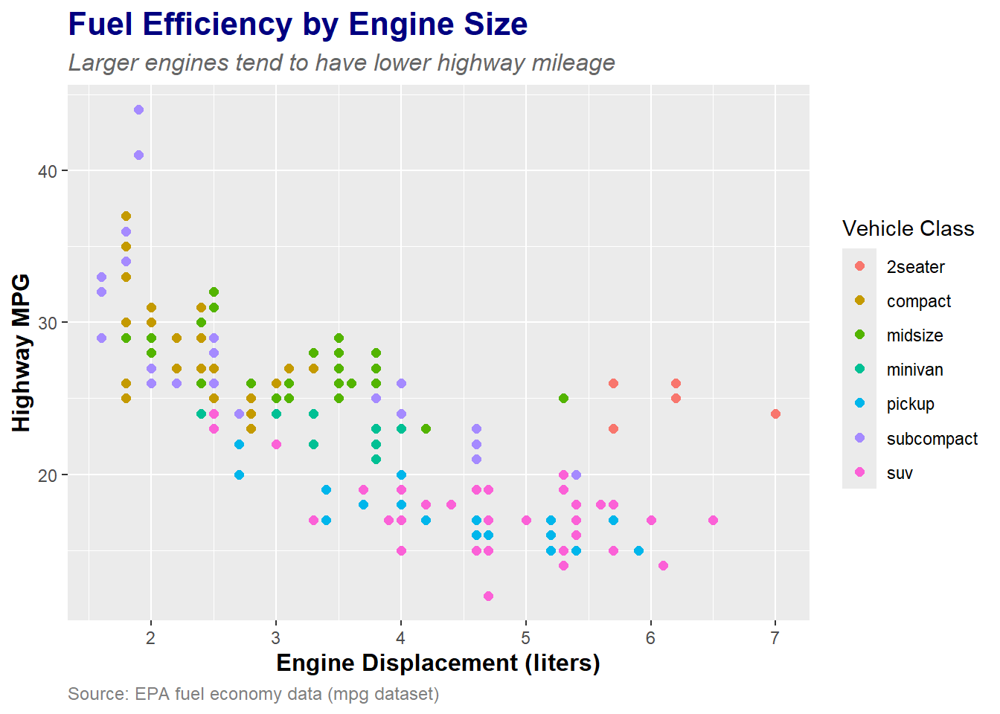
11.2.2 Example: Cleaning Up the Background
ggplot(mpg, aes(x = cty, y = hwy)) +
geom_point(alpha = 0.5, color = "darkorange") +
labs(title = "City vs. Highway Fuel Economy") +
theme(
panel.background = element_rect(fill = "white"),
plot.background = element_rect(fill = "gray95"),
panel.grid.major = element_line(color = "gray80", linewidth = 0.5),
panel.grid.minor = element_blank()
)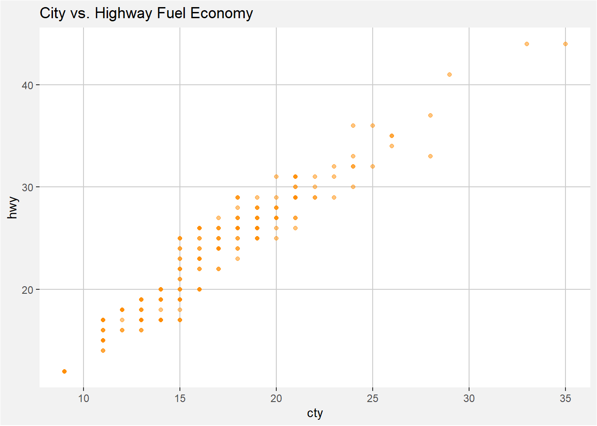
11.2.3 Example: Rotating Long Axis Labels
When your category labels overlap, angle them:
ggplot(mpg, aes(x = manufacturer)) +
geom_bar(fill = "coral") +
labs(title = "Vehicles by Manufacturer", x = NULL, y = "Count") +
theme(
axis.text.x = element_text(angle = 45, hjust = 1, size = 9),
plot.title = element_text(face = "bold", size = 14)
)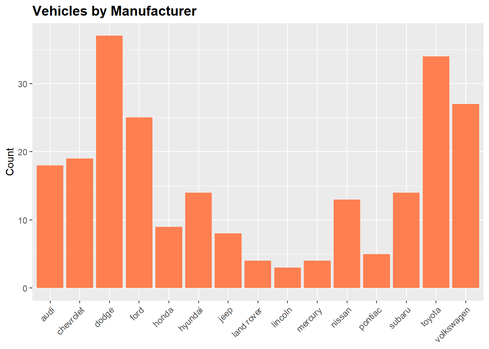
11.3 Colors That Look Good
Color is one of the most impactful things you can change. ggplot2 gives you several ways to control it.
11.3.1 Manual Colors – Pick Your Own
Use scale_color_manual() (for points and lines) or scale_fill_manual() (for bars and areas) to set exact colors:
ggplot(mpg, aes(x = displ, y = hwy, color = drv)) +
geom_point(size = 2) +
scale_color_manual(
values = c("f" = "#E41A1C", "r" = "#377EB8", "4" = "#4DAF4A"),
labels = c("f" = "Front", "r" = "Rear", "4" = "Four-Wheel")
) +
labs(title = "MPG by Engine Size and Drive Type", color = "Drive Type")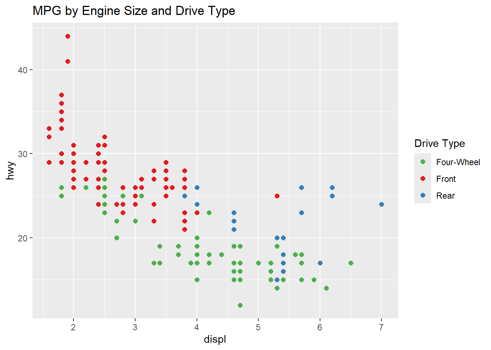
This is great when your company has brand colors or when you want precise control.
11.3.2 ColorBrewer – Pre-Made Palettes That Work
ColorBrewer palettes were designed by a cartographer to be visually clear and print-friendly. They are excellent defaults:
RColorBrewer::display.brewer.all()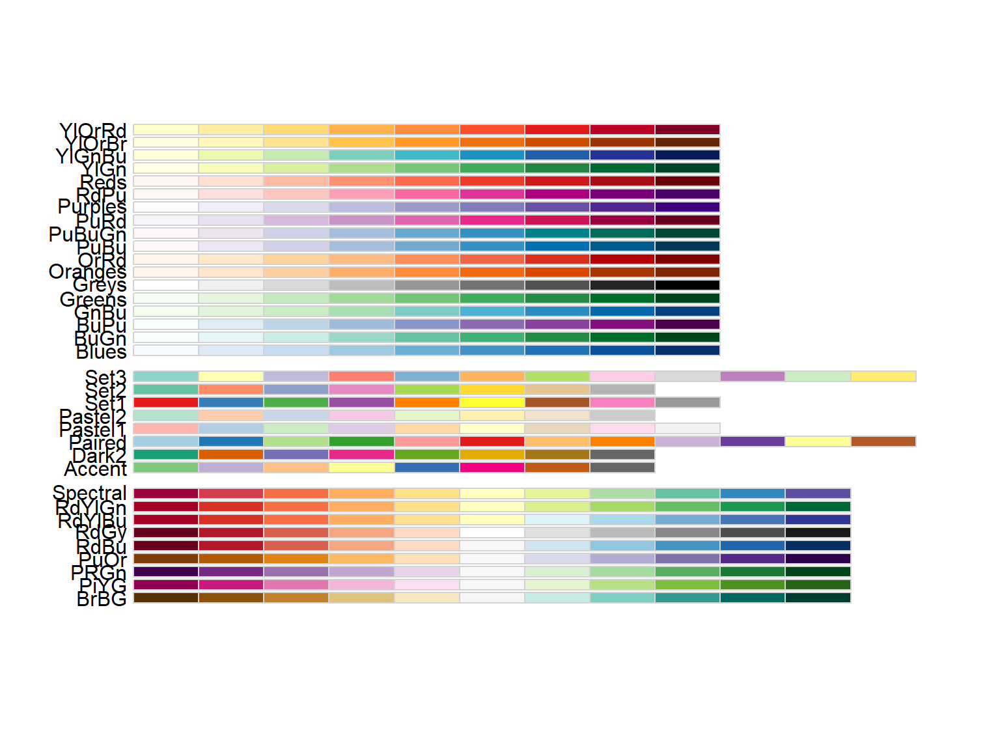
Three categories:
- Sequential (Blues, Greens, OrRd) – for ordered data, low to high
- Diverging (RdBu, RdYlGn) – for data with a meaningful midpoint
- Qualitative (Set1, Set2, Dark2) – for unordered categories
ggplot(mpg, aes(x = class, fill = class)) +
geom_bar() +
scale_fill_brewer(palette = "Set2") +
labs(title = "Vehicle Counts by Class (Set2 palette)") +
theme(legend.position = "none")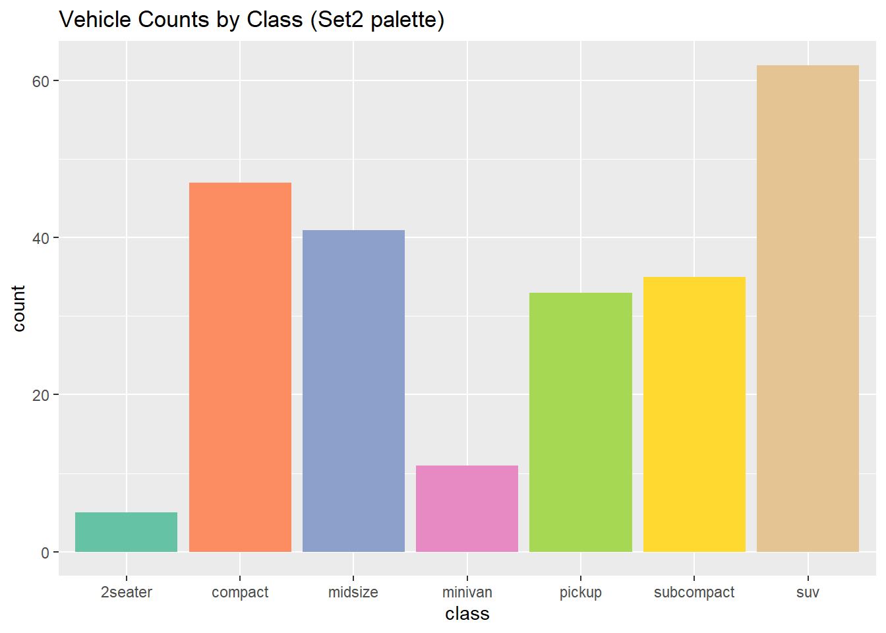
ggplot(iris, aes(x = Sepal.Length, y = Sepal.Width, color = Species)) +
geom_point(size = 2.5) +
scale_color_brewer(palette = "Dark2") +
labs(title = "Iris Measurements (Dark2 palette)")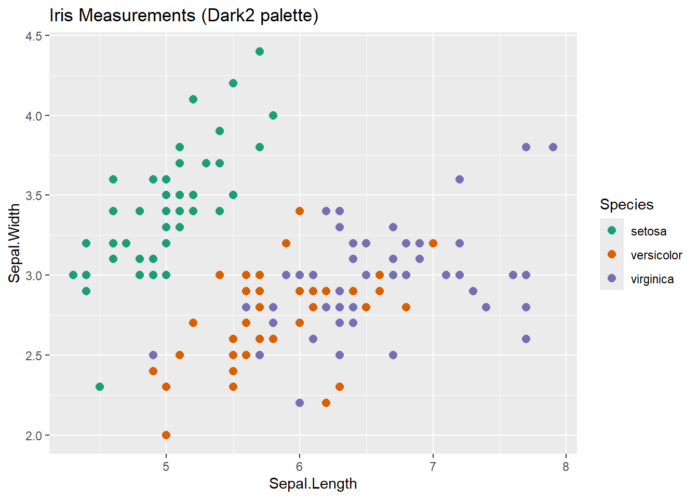
11.3.3 Viridis – Colorblind-Friendly and Beautiful
The viridis palettes are perceptually uniform and work for people with color vision deficiencies. They are a great default choice, especially for continuous data:
diamonds_sample <- diamonds[sample(nrow(diamonds), 2000), ]
v1 <- ggplot(diamonds_sample, aes(x = carat, y = price, color = depth)) +
geom_point(alpha = 0.6) +
scale_color_viridis_c(option = "viridis") +
labs(title = "viridis")
v2 <- ggplot(diamonds_sample, aes(x = carat, y = price, color = depth)) +
geom_point(alpha = 0.6) +
scale_color_viridis_c(option = "magma") +
labs(title = "magma")
v3 <- ggplot(diamonds_sample, aes(x = carat, y = price, color = depth)) +
geom_point(alpha = 0.6) +
scale_color_viridis_c(option = "plasma") +
labs(title = "plasma")
v4 <- ggplot(diamonds_sample, aes(x = carat, y = price, color = depth)) +
geom_point(alpha = 0.6) +
scale_color_viridis_c(option = "inferno") +
labs(title = "inferno")
(v1 | v2) / (v3 | v4)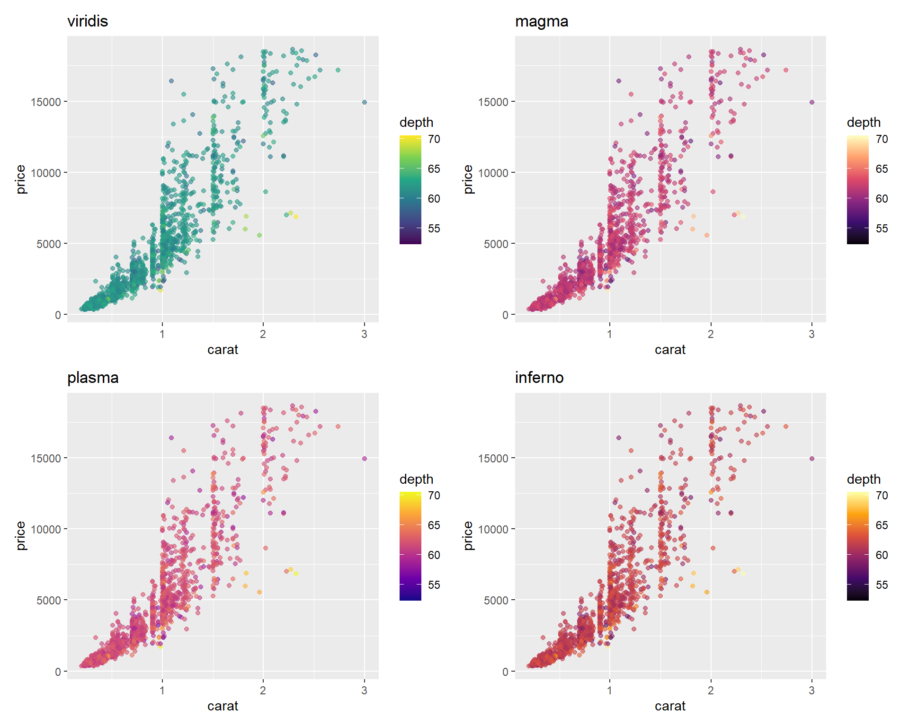
All four palettes go from dark to light, but the color journeys differ. Viridis (the default) runs from purple through green to yellow — the best all-rounder. Magma and inferno go through warm reds and oranges, making high values “pop” more dramatically. Plasma takes a purple-to-yellow path through pinks. All four are designed to be readable even when printed in black and white and are safe for people with color vision deficiencies. When in doubt, stick with the default viridis.
For discrete (categorical) data, use scale_color_viridis_d() or scale_fill_viridis_d():
ggplot(mpg, aes(x = class, fill = class)) +
geom_bar() +
scale_fill_viridis_d(option = "plasma") +
labs(title = "Vehicle Class with Viridis Discrete (Plasma)") +
theme(legend.position = "none")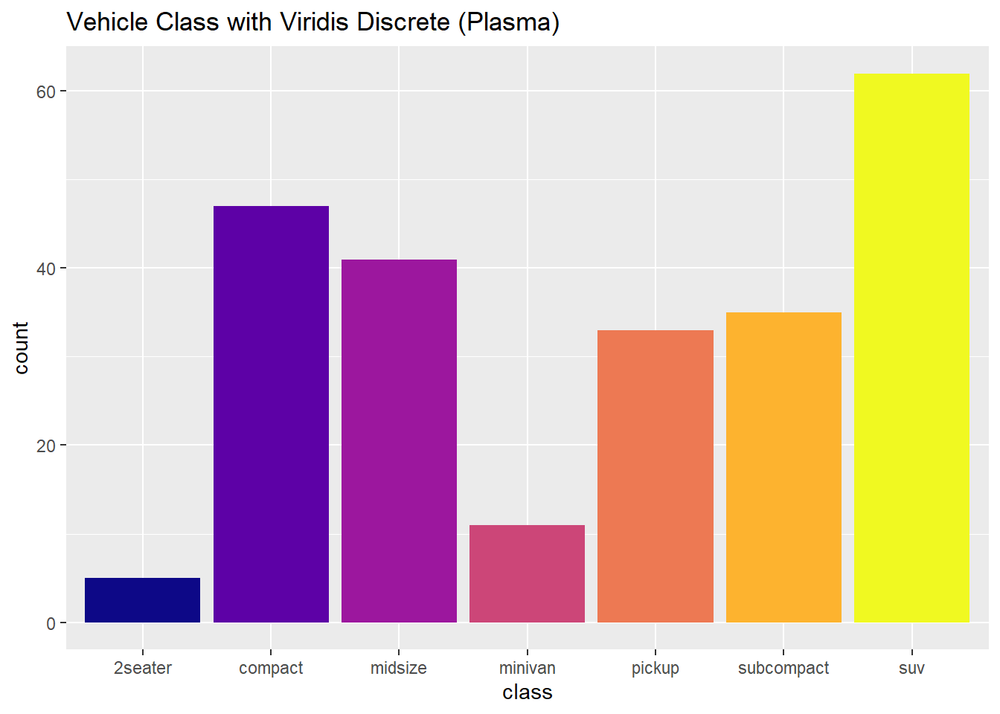
11.4 Axis Formatting – Dollars, Commas, and Percentages
Nothing says “this chart is for business people” like properly formatted axis labels.
11.4.1 The scales Package
The scales package gives you label formatters that handle the common cases:
diamonds_summary <- diamonds %>%
group_by(cut) %>%
summarize(avg_price = mean(price), count = n())
ggplot(diamonds_summary, aes(x = cut, y = avg_price)) +
geom_col(fill = "darkgreen") +
scale_y_continuous(labels = scales::dollar) +
labs(title = "Average Diamond Price by Cut", x = "Cut Quality", y = "Average Price")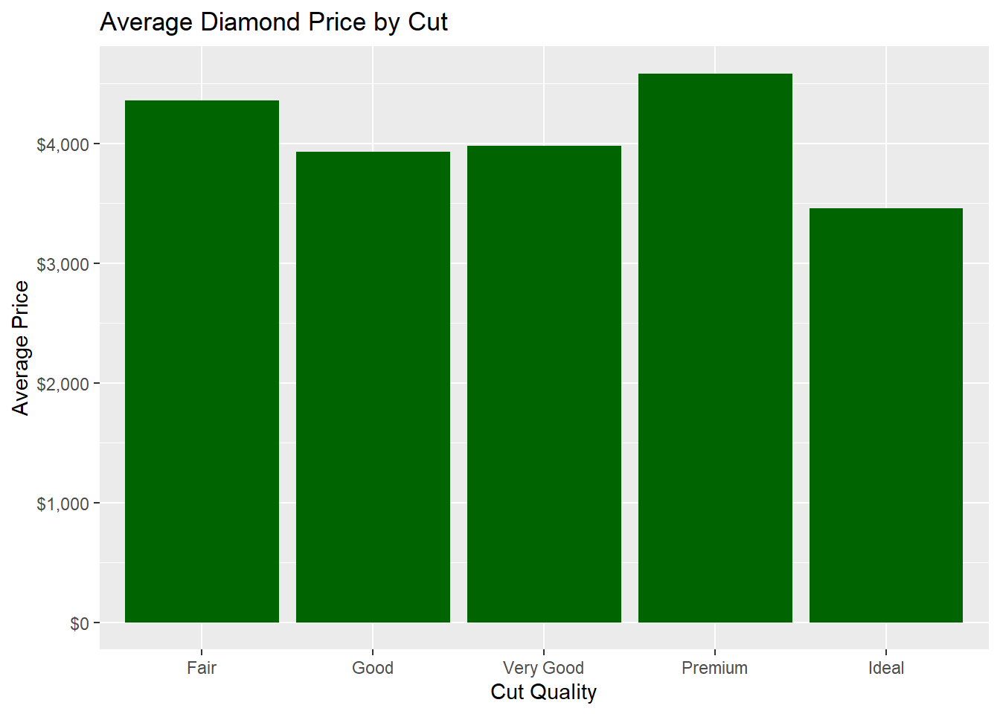
ggplot(diamonds_summary, aes(x = cut, y = count)) +
geom_col(fill = "steelblue") +
scale_y_continuous(labels = scales::comma) +
labs(title = "Diamond Count by Cut", x = "Cut Quality", y = "Number of Diamonds")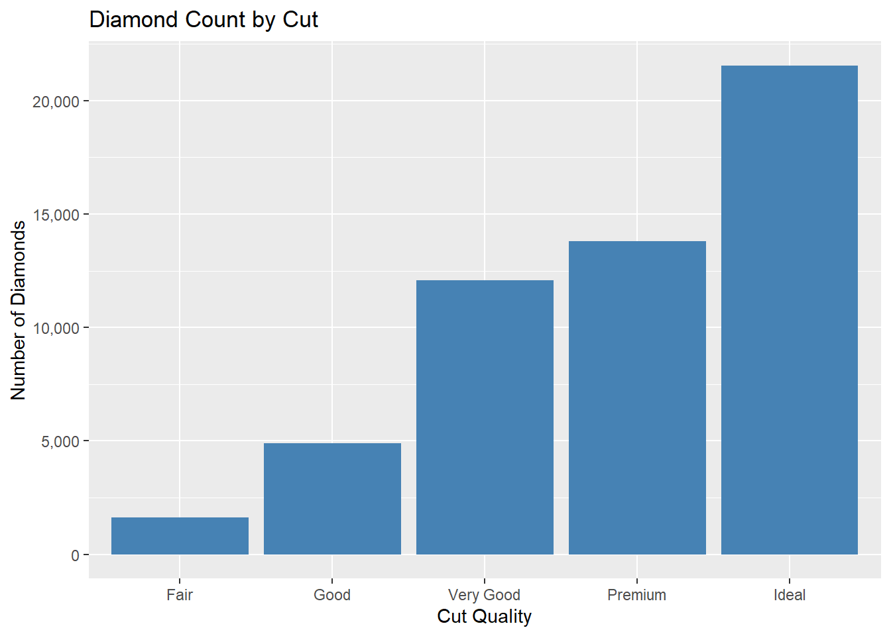
mpg_pct <- mpg %>%
count(class) %>%
mutate(pct = n / sum(n))
ggplot(mpg_pct, aes(x = reorder(class, pct), y = pct)) +
geom_col(fill = "tomato") +
scale_y_continuous(labels = scales::percent) +
coord_flip() +
labs(title = "Percentage of Vehicles by Class", x = NULL, y = "Percentage")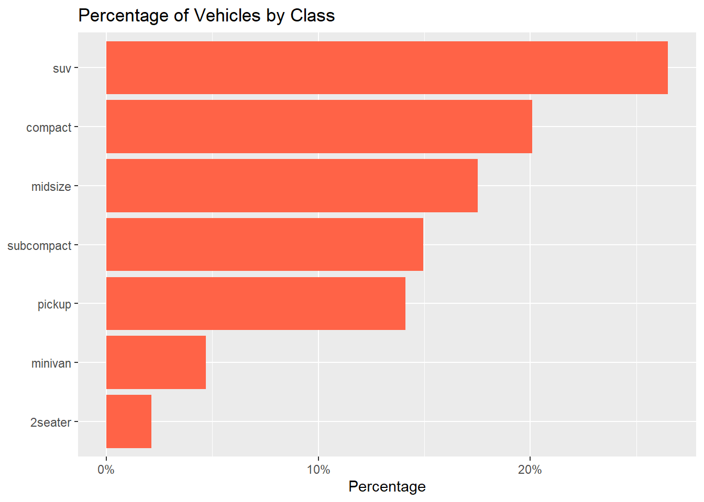
11.4.2 Log Scales
When your data spans several orders of magnitude (like revenue data that goes from $100 to $100M), log scales help:
ggplot(diamonds, aes(x = carat, y = price)) +
geom_point(alpha = 0.05, color = "purple") +
scale_x_log10() +
scale_y_log10(labels = scales::dollar) +
labs(title = "Diamond Price vs. Carat (Log Scale)", x = "Carat (log)", y = "Price (log)")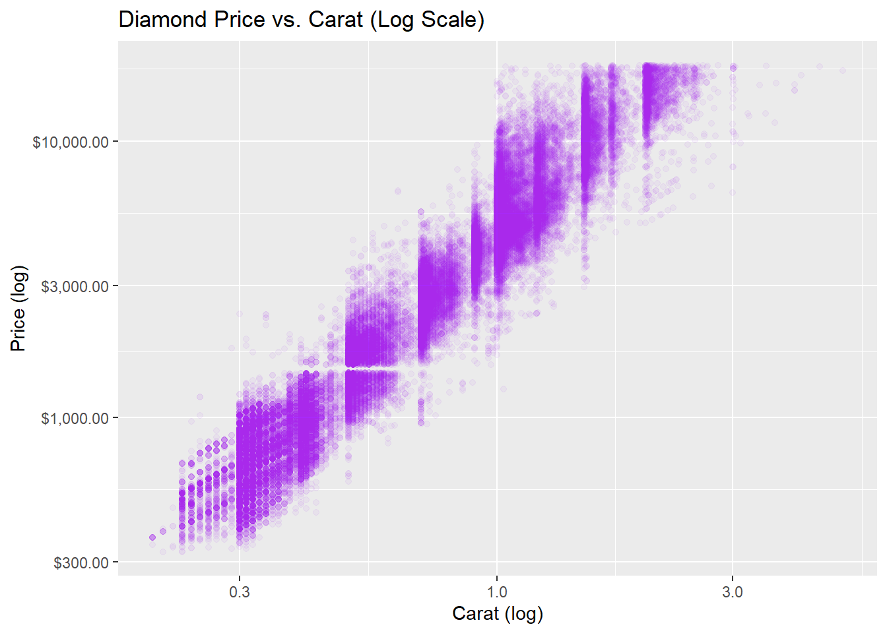
On the original linear axes, the diamond data was a curved blob. On log scales, the relationship between carat and price becomes nearly linear, which means the relationship is multiplicative — doubling the carat weight roughly multiplies the price by a fixed factor rather than adding a fixed dollar amount. Log scales are your friend whenever data spans orders of magnitude or when exponential/power-law relationships are at play.
11.4.3 Zooming vs. Filtering – An Important Distinction
There are two ways to limit your axes, and they behave very differently:
-
coord_cartesian()zooms in without removing data. Trend lines and statistics stay accurate. -
scale_*_continuous(limits = ...)removes data outside the range, which can change trend lines.
p_base <- ggplot(mpg, aes(x = displ, y = hwy)) +
geom_point() +
geom_smooth(method = "lm")
p_scale <- p_base +
scale_x_continuous(limits = c(3, 6)) +
ggtitle("scale limits (data removed)")
p_coord <- p_base +
coord_cartesian(xlim = c(3, 6)) +
ggtitle("coord_cartesian (zoom only)")
p_scale | p_coord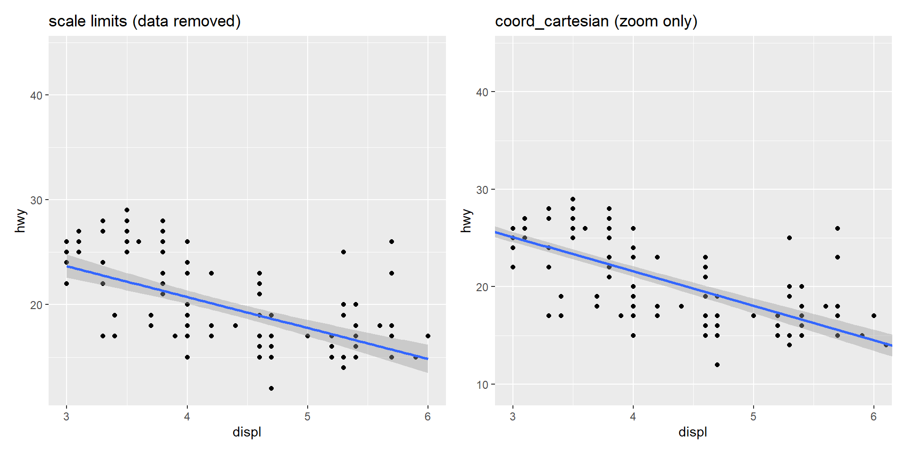
See how the regression lines differ? The left panel’s line is steeper because it was fitted only to the visible data (3–6 liters), ignoring the smaller and larger engines. The right panel’s line was fitted to all the data and then the view was zoomed in. This distinction matters when you are showing a zoomed-in portion of a chart in a presentation — use coord_cartesian() so your trend lines and statistics reflect the full picture, not just the window.
11.5 Legend Customization
11.5.1 Moving the Legend Around
base <- ggplot(mpg, aes(x = displ, y = hwy, color = class)) +
geom_point()
l1 <- base + theme(legend.position = "top") + ggtitle("Top")
l2 <- base + theme(legend.position = "bottom") + ggtitle("Bottom")
l3 <- base + theme(legend.position = "left") + ggtitle("Left")
l4 <- base + theme(legend.position = "right") + ggtitle("Right (default)")
(l1 | l2) / (l3 | l4)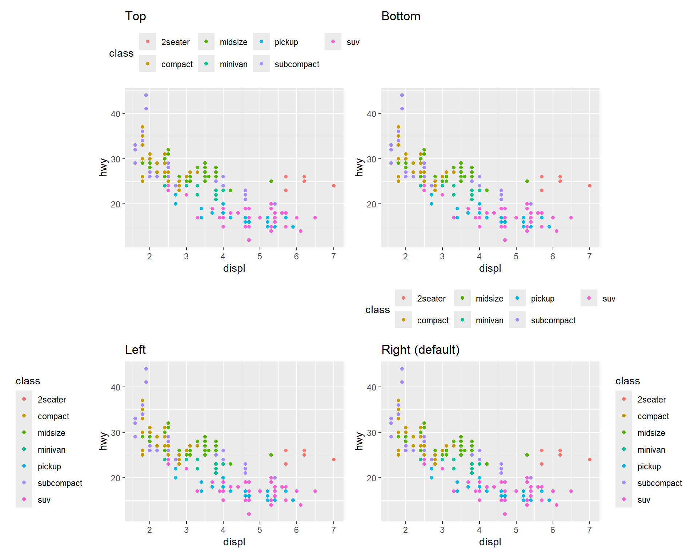
11.5.2 Removing the Legend
When the information is obvious from context (like a bar chart where color matches the x-axis labels), just remove it:
ggplot(mpg, aes(x = class, fill = class)) +
geom_bar() +
theme(legend.position = "none") +
labs(title = "Bar Chart Without Legend")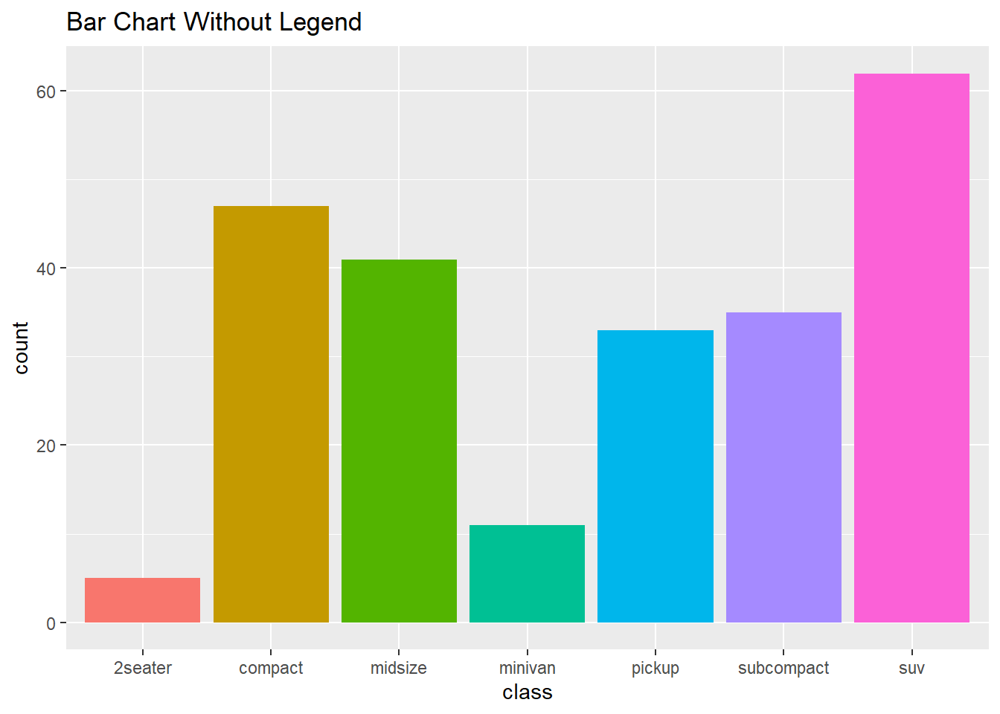
11.5.3 Customizing Legend Title and Labels
ggplot(iris, aes(x = Sepal.Length, y = Petal.Length, color = Species)) +
geom_point(size = 2) +
scale_color_manual(
values = c("setosa" = "#1b9e77", "versicolor" = "#d95f02", "virginica" = "#7570b3"),
labels = c("Setosa", "Versicolor", "Virginica")
) +
labs(color = "Iris Species", title = "Custom Legend Title and Labels")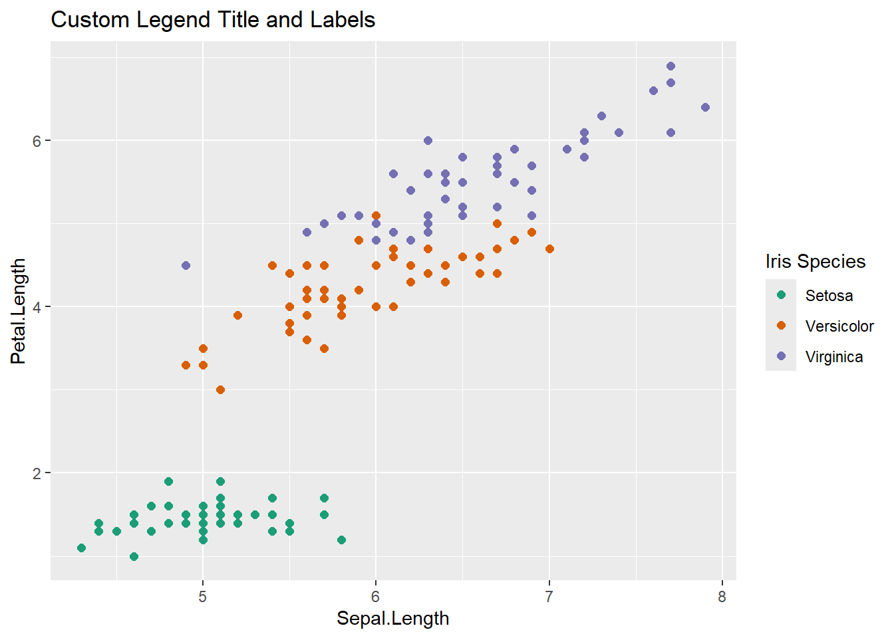
11.6 Annotations – Drawing Attention Where It Matters
11.6.1 annotate()
Add text, shapes, or arrows to specific spots on your chart:
ggplot(mpg, aes(x = displ, y = hwy)) +
geom_point(color = "gray50") +
annotate("text", x = 6, y = 40, label = "Efficient outliers",
color = "red", fontface = "bold", size = 5) +
annotate("rect", xmin = 5.5, xmax = 7, ymin = 25, ymax = 45,
alpha = 0.1, fill = "red", color = "red", linetype = "dashed") +
labs(title = "Using annotate() for Text and Shapes")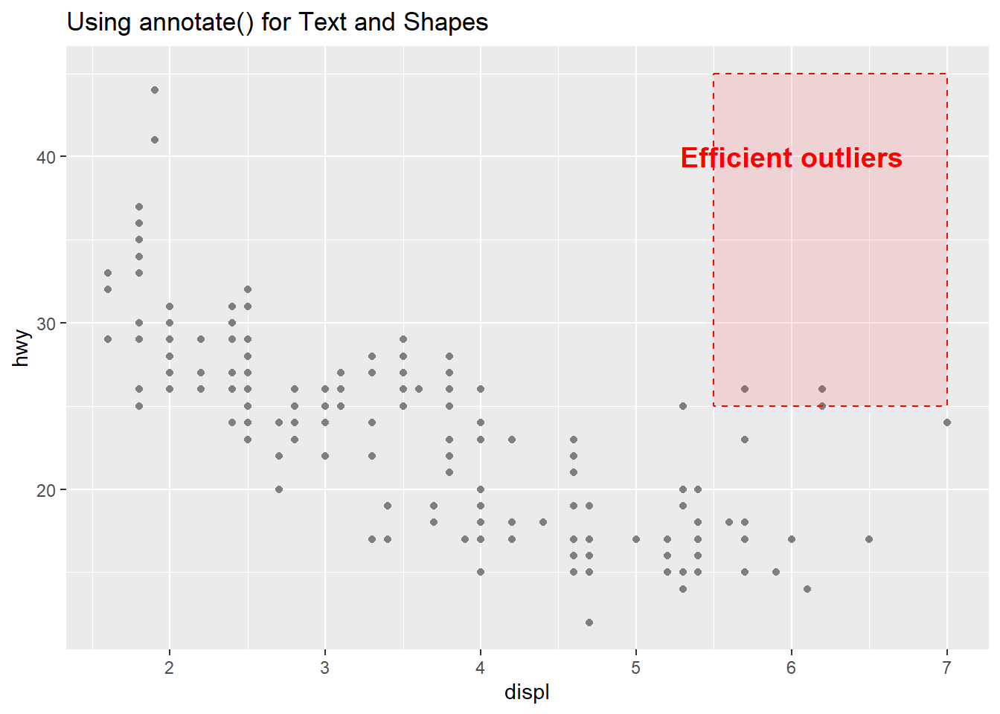
11.6.2 geom_text() and geom_label() for Data-Driven Labels
top_classes <- mpg %>%
count(class) %>%
arrange(desc(n)) %>%
head(5)
ggplot(top_classes, aes(x = reorder(class, n), y = n)) +
geom_col(fill = "steelblue") +
geom_text(aes(label = n), hjust = -0.3, size = 5, fontface = "bold") +
coord_flip() +
scale_y_continuous(expand = expansion(mult = c(0, 0.15))) +
labs(title = "Top 5 Vehicle Classes", x = NULL, y = "Count")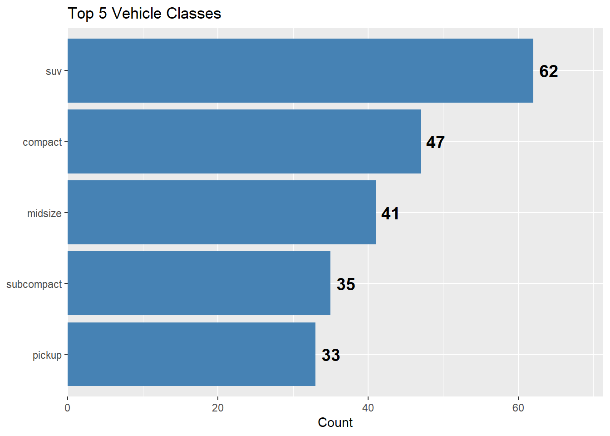
11.6.3 ggrepel for Non-Overlapping Labels
When labels pile on top of each other, the ggrepel package automatically spaces them out:
library(ggrepel)
best_mpg <- mpg %>%
group_by(manufacturer) %>%
slice_max(hwy, n = 1) %>%
ungroup() %>%
slice_max(hwy, n = 8)
ggplot(mpg, aes(x = displ, y = hwy)) +
geom_point(color = "gray70") +
geom_point(data = best_mpg, color = "red", size = 3) +
geom_label_repel(
data = best_mpg,
aes(label = paste(manufacturer, model)),
size = 3,
max.overlaps = 20,
fill = "lightyellow"
) +
labs(
title = "Most Fuel-Efficient Vehicles by Manufacturer",
subtitle = "Top 8 models highlighted",
x = "Engine Displacement (L)",
y = "Highway MPG"
)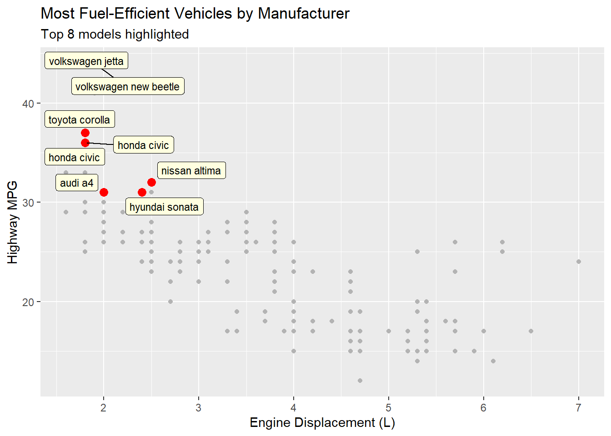
11.7 Combining Plots with patchwork
In real life, you often need to present multiple charts together – a scatter plot next to a bar chart, or a grid of related views. The patchwork package makes this easy with intuitive operators:
-
|places plots side by side -
/stacks plots vertically -
()groups plots to control layout order
p_scatter <- ggplot(mpg, aes(x = displ, y = hwy)) +
geom_point(color = "steelblue") +
labs(title = "Scatter Plot")
p_box <- ggplot(mpg, aes(x = drv, y = hwy, fill = drv)) +
geom_boxplot(show.legend = FALSE) +
labs(title = "Box Plot")
p_bar <- ggplot(mpg, aes(x = class)) +
geom_bar(fill = "coral") +
labs(title = "Bar Chart") +
theme(axis.text.x = element_text(angle = 45, hjust = 1))
p_scatter | p_box | p_bar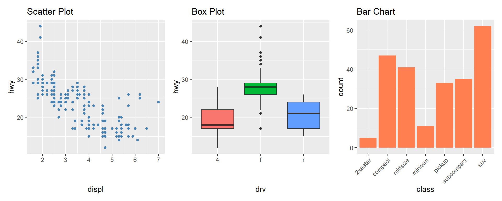
11.7.1 Controlling Layout
(p_scatter | p_box) / p_bar +
plot_layout(heights = c(2, 1))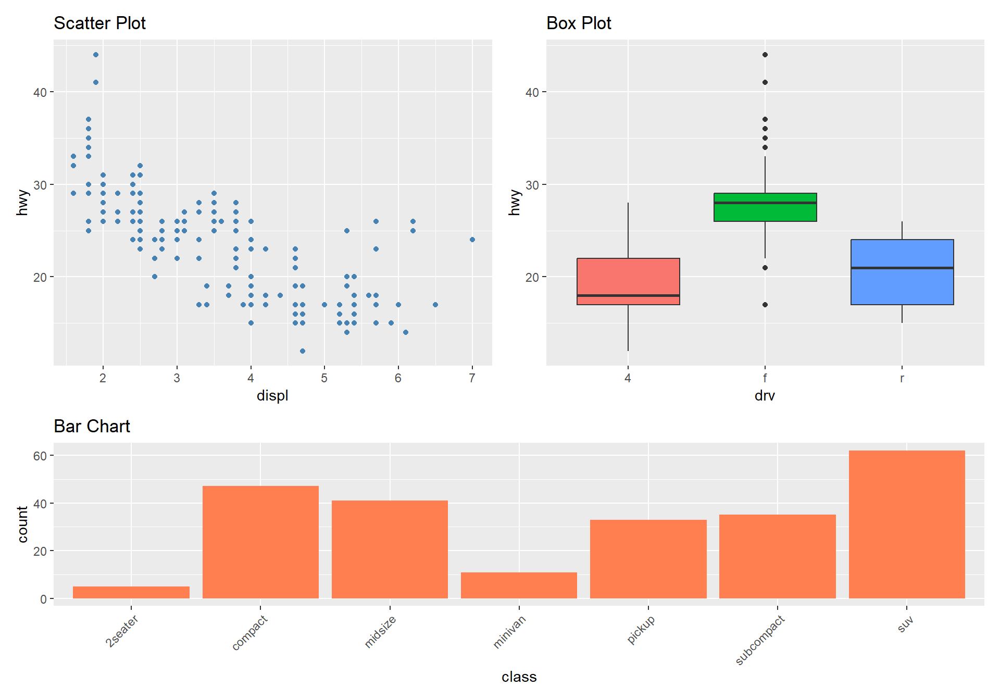
11.8 Summary
Here is your customization toolkit at a glance:
Themes – Use
theme_minimal()ortheme_bw()for clean, professional charts. Tryggthemesfor publication-specific styles. Set a global default withtheme_set().theme() tweaks – Fine-tune titles, axes, gridlines, and backgrounds with
element_text(),element_line(),element_rect(), andelement_blank().Colors – Use
scale_color_brewer()for categorical data,scale_color_viridis_c()for continuous data, andscale_color_manual()when you need exact colors.Axis formatting – Use the
scalespackage fordollar,comma, andpercentlabels. Usecoord_cartesian()to zoom without distorting statistics.Legends – Move with
theme(legend.position = ...). Remove with"none". Customize labels in the scale function.Annotations – Use
annotate()for fixed labels,geom_text()for data-driven labels, andggrepelto prevent overlaps.Multi-panel figures – Use patchwork with
|,/,plot_layout(), andplot_annotation()to combine charts into a cohesive story.
With these tools, you can take any default ggplot2 chart and turn it into something you would be proud to put in front of a client, a manager, or an audience of 500 people.